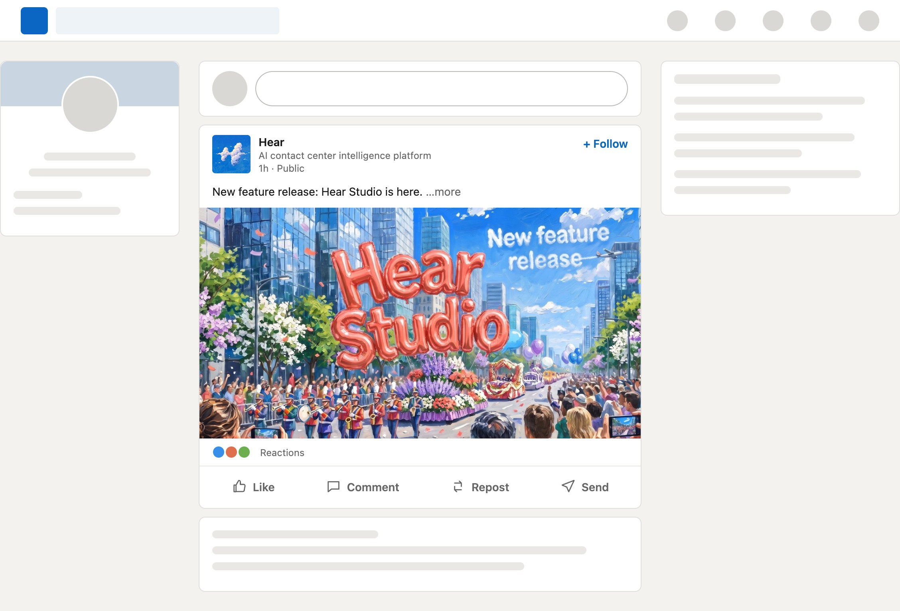
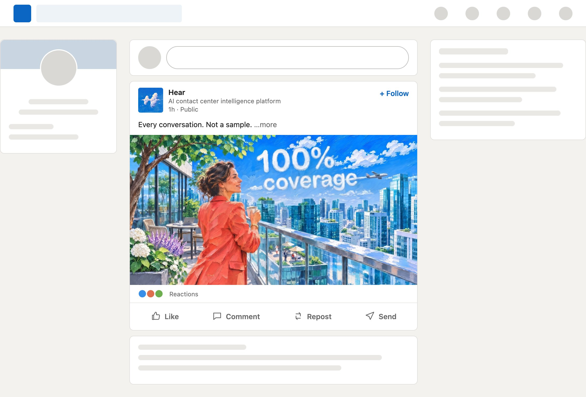
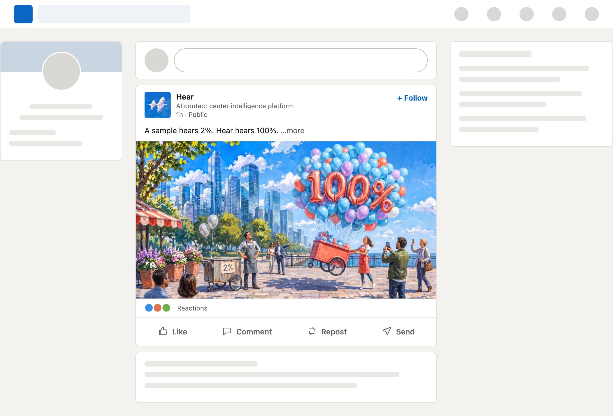
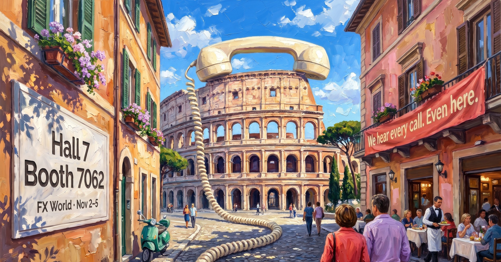
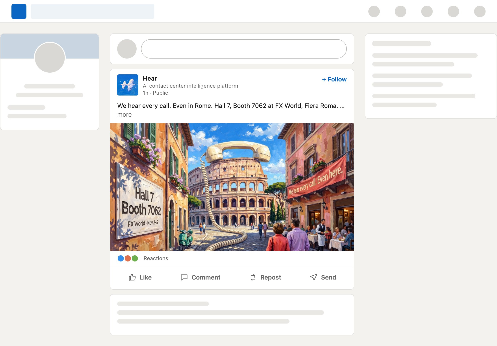
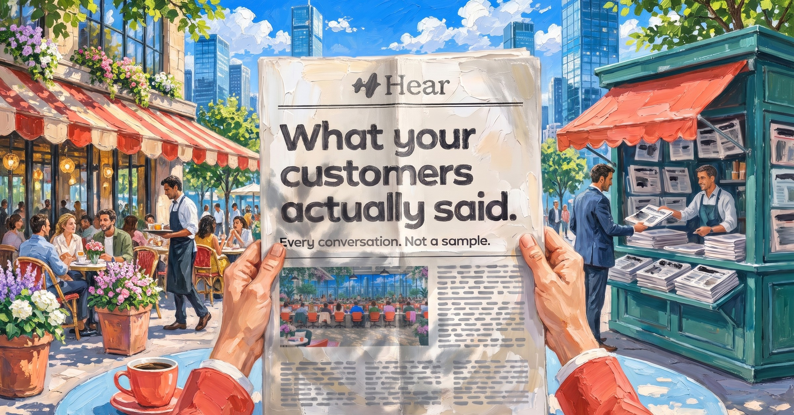
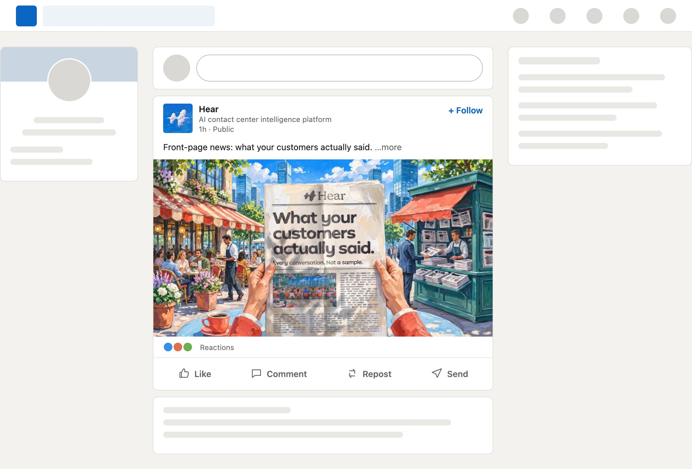
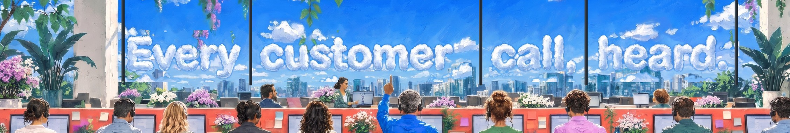

Hear · נכסי מותג
Foundations Color
 The picture
The picture
The product
The palette
Nine colors, one job each
Four roles, shared by the picture and the screen.
- PictureOne set for the picture and for the screen.
- Product
Ground
Structure
Voice
Meaning
המערכת: המסכים הראשונים


סרטים
הסרט הראשון: Hear, מה שנאמר בקולהגרסה הארוכה, 61 שניות: Just ask
הסרט השני: One sentence
תמונות עולם לרשתות
 תהלוכה: Hear Studio
תהלוכה: Hear Studio
אותה תמונה בתוך פיד תהלוכה: המסגור הרחב
תהלוכה: המסגור הרחב בית הקפה: Just growth delivered
בית הקפה: Just growth delivered אותה תמונה בתוך פיד
אותה תמונה בתוך פיד המטוס: 100% coverage
המטוס: 100% coverage
אותה תמונה בתוך פיד הבלונים: 2% מול 100%
הבלונים: 2% מול 100%
אותה תמונה בתוך פיד
רומא: We hear every call. Even here.
אותה תמונה בתוך פיד
עיתון הבוקר: What your customers actually said.
אותה תמונה בתוך פיד
תמונת נושא ללינקדאין: Every customer call, heard. אותה תמונה בעמוד החברה
אותה תמונה בעמוד החברה